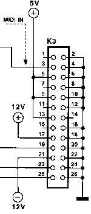

|
|
19.5 WaveBlaster
How to adapt a Waveblaster soundcard
Adapt a Waveblaster soundcard to the ST
The PC-world is filled with simple things with fancy names, and Waveblaster is one of them. It's a impressive sounding name for a impressing sounding technology from , but in reality it's nothing but a combined MIDI- (crippled
ofcourse, this is PC-technology) power- and audio-connector. The
purpose of the Waveblaster-port (which is present on most/all
Soundblaster-cards and -clones) is to connect a daughterboard with
proper MIDI-sound. By building a Waveblaster-port yourself you can
connect these cards to your ST/Falcon/whatever.
What do you need?
Point 2 will probably cause a few headaches, as the standard PSU
in the (Mega)ST/Falcon doesn't have -12v. I have been informed that
the TT- and MegaSTE-PSU will deliver -12v. You'll also need some space
for the card, so this project is probably best suited for those of you
that have recased machines with PC-powersupplies.
Pin-layout

Waveblaster pin-layout
2,4,6,8,10,12,16,18,20,22,24,26: Ground
The MIDI-input is TTL, so you'll need some circuitry to convert
the standard MIDI current loop to TTL.
14,1,7,11,15: Not connected
The audio-outputs are standard line-level, but can't deliver
enough juice for headphones.
25: Reset
The complete circuit
This circuit has everything you need to connect a Waveblaster-card
to your ST/Falcon. It consists of three main-parts:
MIDI "current loop" to TTL converter
The optocoupler IC1 with the additional parts D1, R4 and R5
converts MIDI "current loop" to TTL. This is cruical, I
tried several solutions before I resigned and ordered myself some
optocouplers.
Buffer and MIDI-THRU
IC2 buffers the converted TTL-signal before it's fed to the
Waveblaster-port, as well as providing a MIDI-THRU together with R2
and R3. MIDI-THRU must be used as your machine's new MIDI OUT if you
need one.
Reset
R1/C6 resets the card at power-up. You could replace C6 with a
switch and reset manually, but I wouldn't recommend that as the card
can easily be reset by software if needed.
Parts R1 - 10KOhm
My Waveblaster-card is a , which is rather expensive but also rather good :-) Any
Waveblaster-card should work, but I have only tested the Yamaha and
can't guarantee anything.
Software
Some useful software for XG-cards and MIDI in general.
Tiny application for resetting the DB50XG to XG or GM mode.
Simple and useful MIDI-player. Doesn't multitask though.
Simple and good sequencer, also good for playing MIDI-files. The
timing is excellent and it runs well in a multitasking environment.
"vchile.mid" Incredible XG-song!
Links
Michael's Yamaha XG Page - The No. 1 resource for Yamaha XG Midi!
|

|
|